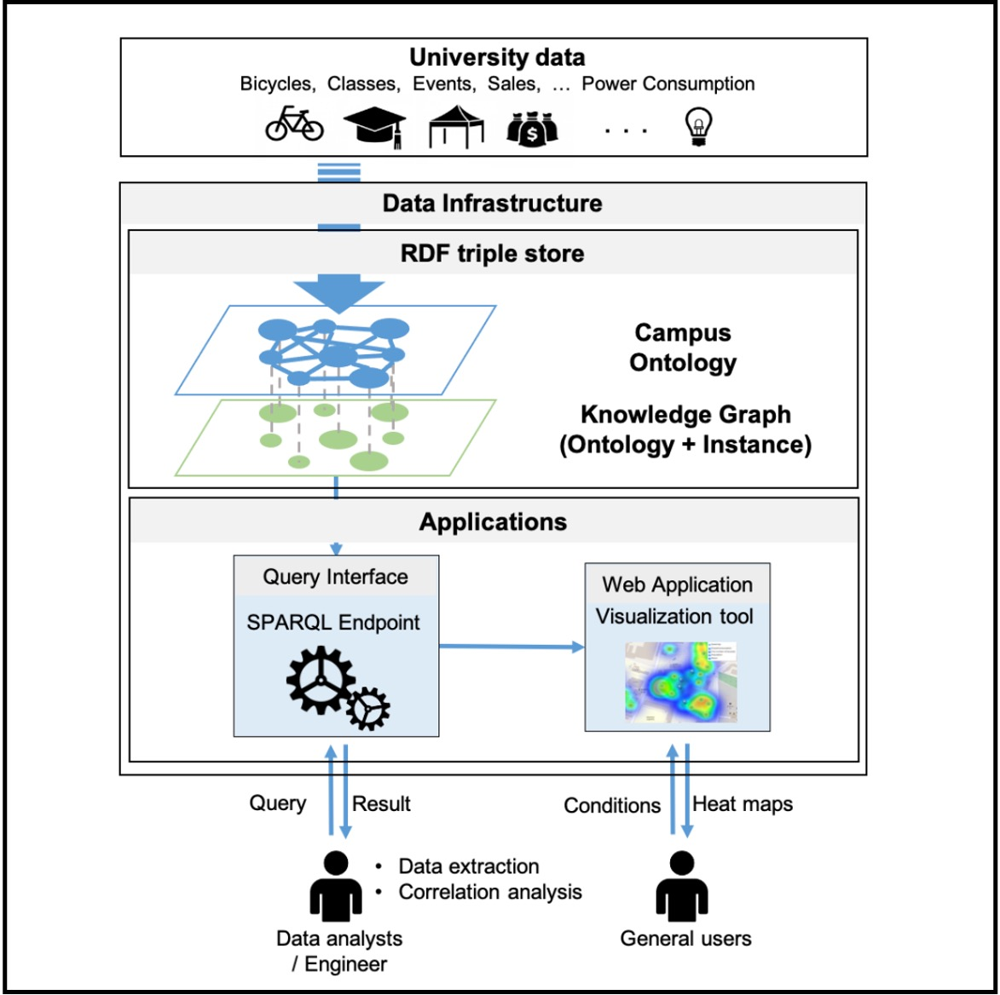
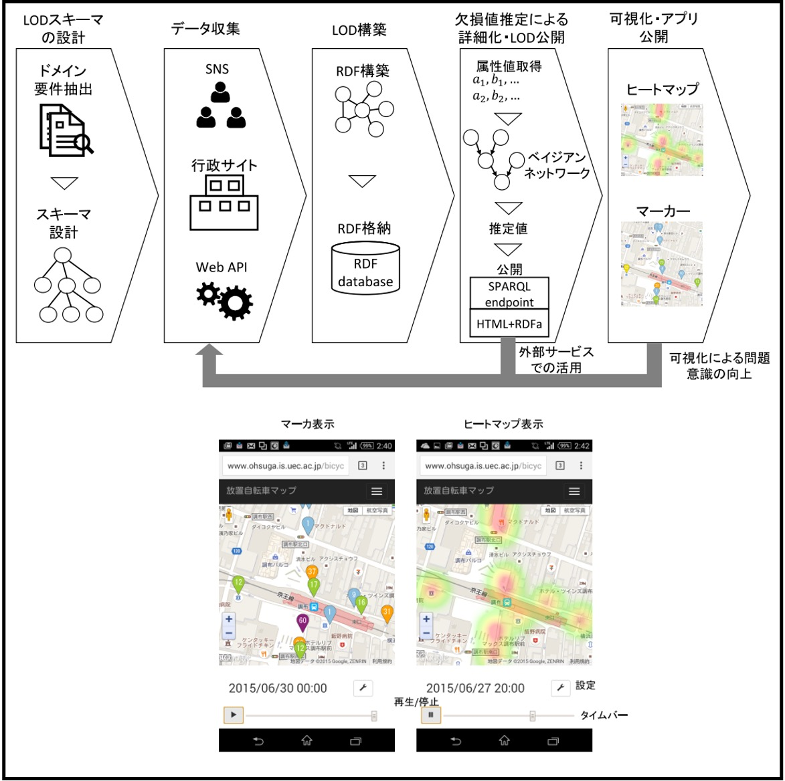
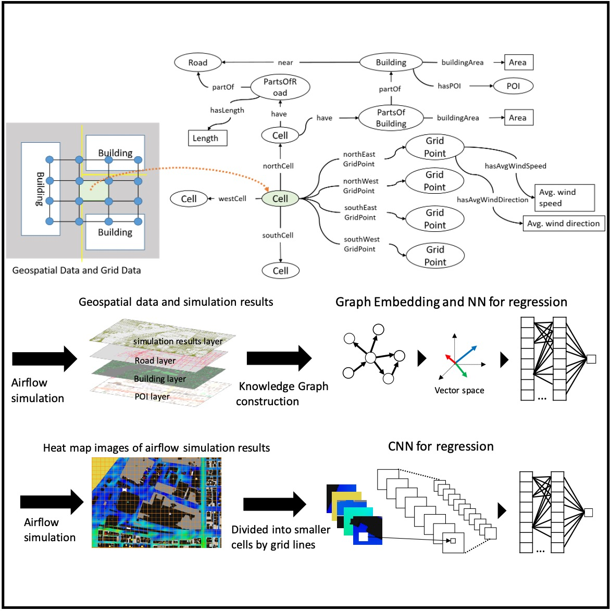

I am a researcher at Artificial Intelligence Research Center (AIRC), National Institute of Advanced Industrial Science and Technology (AIST), Japan, where I work on knowledge graph and semantic technology. I am also a part-time lecturer at Hosei University, where I teach semantic web (spring semester) and agent technology (fall semester). I am also collaborative researcher at The University of Electro-Communications (UEC) (Ohsuga, Tahara, & Sei Lab ).
I did my PhD at UEC, where I was advised by Takahiro Kawamura and Akihiko Ohsuga and funded by the JSPS DC2.


Research
I'm interested in semantic web, ontology, graph representation learning, and open data. Much of my research is about constructing and reasoning knowledge graphs from physical and cyber worlds (unstructured text, semistructured data, video, virtual space, etc.).
Peer-reviewed Journal Papers

|
13.
Shusaku Egami, Takanori Ugai, Mikiko Oono, Koji Kitamura, Ken Fukuda IEEE Access, Vol.11, pp.23857-23873, 2023 DOI: https://doi.org/10.1109/ACCESS.2023.3253807 (open access) We proposed the VirtualHome2KG framework to generate synthetic KGs of daily life activities in virtual space. We also demonstrated the utility and potential of the VirtualHome2KG through several use cases, including the analysis of daily activities by querying, embedding, and clustering, and fall risk detection among older adults based on expert knowledge. |

|
12.
Shusaku Egami, Yasunori Yamamoto, Ikki Ohmukai, Takashi Okumura PLOS ONE, Vol.18, No.3: e0282291, 2023 DOI: https://doi.org/10.1371/journal.pone.0282291 (open access) We constructed an ontology, CIRO, which can infer the risk of COVID-19 infection from the action history for the actual operation of tracking and screening of close contacts at public health centers. |

|
11.
Shusaku Egami, Takahiro Kawamura, Kouji Kozaki, Akihiko Ohsuga Data Intelligence, Vol.4, No.1, pp.88-111, 2022 DOI: https://doi.org/10.1162/dint_a_00113 (open access) We extracted urban problem causality from various documents and structured the data as a KG. Then we detected vicious cycles and root problems using SPARQL and SWRL. Furthermore, urban-problem experts evaluated the extracted causal relations. |
|

|
10.
Yuto Tsukagoshi, Shusaku Egami, Yuichi Sei, Yasuyuki Tahara, Akihiko Ohsuga IEEJ Transactions on Electronics, Information and Systems, Vol.141, No.11, pp.1222-1233, 2021 (in Japanese) DOI: https://doi.org/10.1541/ieejeiss.141.1222 We collected unstructured data from a university campus and integrated it as a knowledge graph based on the proposed ontology. |

|
9.
Shusaku Egami, Xiaodong Lu, Tadashi Koga, Yasuto Sumiya Transactions of the Japanese Society for Artificial Intelligence, Vol.36, No.1, pp.WI2-F_1-12, 2021.1 (in Japanese) project page / DOI: https://doi.org/10.1527/tjsai.36-1_WI2-F (open access) We developed a reference ontology that enables common situational awareness of spatiotemporal concepts for semantic interoperability in air traffic information management. |

|
8.
Takahiro Kawamura, Shusaku Egami IEEE Transactions on Engineering Management, Vol.68, No.5, 2021 project page / DOI: https://doi.org/10.1109/TEM.2019.2946886 (open access) We proposed a method for creating word and paragraph vectors corresponding to bilingual textual information in the same multidimensional space, aiming to construct a bilingual map of science. |

|
7.
Shusaku Egami, Takahiro Kawamura, Kouji Kozaki, Akihiko Ohsuga International Journal of Smart Computing and Artificial Intelligence, Vol.3, No.1, pp.71-86, 2019 DOI: https://doi.org/10.52731/ijscai.v3.i1.321 (open access) We extracted causal relations using natural language processing and crowdsourcing to construct urban problem Linked Data. |

|
6.
Takahiro Kawamura, Katsutaro Watanabe, Naoya Matsumoto, Shusaku Egami, Mari Jibu Scientometrics, Vol.116, pp.941-958, 2022 project page / DOI: https://doi.org/10.1007/s11192-018-2783-x (open access) We proposed a new content-based method of locating research projects in a multi-dimensional space using the word/paragraph embedding techniques. |

|
5.
Shusaku Egami, Takahiro Kawamura, Akihiko Ohsuga IEICE Transactions on Information and Systems, Vol.E101-D, No.1, pp.116-129, 2018 DOI: https://doi.org/10.1587/transinf.2017SWP0010 (open access) We complemented temporal and spatial missing data of the Linked Open Data (LOD) of the problem of illegally parked bicycles using bayesian networks and computational fluid dynamics. |

|
4.
Shusaku Egami, Takahiro Kawamura, Akihiko Ohsuga International Journal of Smart Computing and Artificial Intelligence, Vol.1, No.2, pp.77-93, 2017 DOI: https://doi.org/10.52731/ijscai.v1.i2.99 (open access) We proposed a schema of illegally parked bicycle LOD (IPBLOD) and a methodology of designing LOD schema. |
|

|
3.
Shusaku Egami, Takahiro Kawamura, Akihiko Ohsuga Transactions of the Japanese Society for Artificial Intelligence, Vol.31, No.6, pp.AI30-K_1-12, 2016 (in Japanese) DOI: https://doi.org/10.1527/tjsai.AI30-K (open access) We purposed eco-cycle for solving illegally parked bicycles using linked open data. |

|
2.
Shusaku Egami, Takahiro Kawamura, Yuichi Sei, Yasuyuki Tahara, Akihiko Ohsuga Transactions on Large-Scale Data and Knowledge-Centered Systems XXVII, Springer LNCS, Vol.9860, pp.129-141, 2016 DOI: https://doi.org/10.1007/978-3-662-53416-8_8 We built an ecosystem that generates Open Urban Data in Link Data format while complementing missing attribute values. |

|
1.
Shusaku Egami, Takahiro Kawamura, Akihiro Fujii, Akihiko Ohsuga IEICE Transactions on Information and Systems, Vol.J98-D, No.6, pp.992-1004, 2015 (in Japanese) CRES: http://id.nii.ac.jp/1438/00009010/ (open access) DOI: https://doi.org/10.1007/978-3-662-53416-8_8 We constructed a linked open data of industrial parts (screw LOD) to realize a business support agent that applies the screw LOD to the bill of materials (BOM). |
International Conference (Peer-reviewed)

|
31.
Shusaku Egami, Mikiko Oono, Mai Otsuki, Takanori Ugai, Ken Fukuda 25th International Conference on Human-Computer Interaction (HCII2023), to appear, 2023 DOI: to appear |
|
|
30.
Kozaki Kouji, Shusaku Egami, Kyoumoto Matsushita, Takanori Ugai, Takahiro Kawamura, Ken Fukuda Semantic Methods for Events and Stories (SEMMES) at ESWC2023, to appear, 2023 DOI: to appear |
|
|
29.
Swe Nwe Nwe Htun, Shusaku Egami, Ken Fukuda 2023 IEEE/SICE International Symposium on System Integrations (SII), pp.1-7, 2023 DOI: https://doi.org/10.1109/SII55687.2023.10039226 Comparison and discussion of daily living activity datasets in real and virtual spaces. |

|
28.
Takahiro Kawamura, Shusaku Egami, Kyoumoto Matsushita, Takanori Ugai, Ken Fukuda, Kouji Kozaki Proceedings of the 11th International Joint Conference on Knowledge Graphs (IJCKG2022), pp.64-72, 2022 project page / data / preprint / slideshare DOI: https://doi.org/10.1145/3579051.3579061 We developed refinement methods for the actual use of the knowledge graphs for inference and machine learning and released refined scene knowledge graphs as open data. |

|
27.
Shuhei Katsushima, Hajime Anada, Shusaku Egami, Ken Fukuda Proceedings of the 1st International Workshop on Knowledge Graph Reasoning for Explainable Artificial Intelligence (KGR4XAI2021) co-located with the 10th International Joint Conference on Knowledge Graphs (IJCKG2021), to appear, 2022 preprint / DOI: to appear We proposed a criminal detection method from mystery novels using the principal components regression analysis of word vectors considering cooccurrence. |

|
26.
Satoshi Nishimura, Shusaku Egami, Takanori Ugai, Mikiko Oono, Koji Kitamura, Ken Fukuda Proceedings of the 10th International Joint Conference on Knowledge Graphs (IJCKG2021), 2021 DOI: https://doi.org/10.1145/3502223.3502239 data1 / data2 We developed the ontologies of actions and objects in the home environment, so-called Primitive Action ontology, and Home Object ontology. |

|
25.
Shusaku Egami, Satoshi Nishimura, Ken Fukuda Proceedings of the 33rd IEEE International Conference on Tools with Artificial Intelligence (ICTAI2021), pp.1226-1230, 2021 DOI: https://doi.org/10.1109/ICTAI52525.2021.00194 code This study proposed a framework for constructing and augmenting knowledge graphs (KGs) based on simulation results of daily living activities. Furthermore, we present several use cases using SPARQL queries and a KG embedding method. |

|
24.
Shusaku Egami, Satoshi Nishimura, Ken Fukuda Proceedings of the ISWC 2021 Posters, Demos and Industry Tracks co-located with 20th International Semantic Web Conference (ISWC2021), CEUR, Vol.2980, 2021 (Best Poster Award) code / YouTube / paper (open access) We proposed a method to construct and augment knowledge graphs (KGs) based on the simulation results of daily living activities. |

|
23.
Kazuyuki Morioka, Xiaodong Lu, Junichi Naganawa, Akinori Murata, Shusaku Egami, Norihiko Miyazaki, Naruto Yonemoto, Akiko Kohmura Integrated Communications, Navigation and Surveillance Conference (ICNS2021), pp.1-8, 2021 DOI: https://doi.org/10.1109/ICNS52807.2021.9441620 We carried out flight experiments using Aeronautical Mobile Airport Communications System (AeroMACS) and System Wide Information Management (SWIM) prototype system. |

|
22.
Xiaodong Lu, Kazuyuki Morioka, Shusaku Egami, Tadashi Koga, Yasuto Sumiya, Junichi Naganawa, Naruto Yonemoto Air Traffic Management and Systems IV: Selected Papers of the 6th ENRI International Workshop on ATM/CNS (EIWAC2019), 2021 DOI: https://doi.org/10.1007/978-981-33-4669-7_17 The development of a practical validation system of ground taxiing experiment for A/G SWIM integration. |

|
21.
Yuto Tsukagoshi, Shusaku Egami, Yuichi Sei, Yasuyuki Tahara, Akihiko Ohsuga Proceedings of the Third IEEE International Conference on Artificial Intelligence and Knowledge Engineering (AIKE2020), pp.25-32, 2020 DOI: https://doi.org/10.1109/AIKE48582.2020.00014 We focused on a university campus as an example of a small organization and propose an ontology that enables the cross-sectional analysis of various data. |

|
20.
Shusaku Egami, Xiaodong Lu, Tadashi Koga, Yasuto Sumiya Proceedings of the 14th IEEE International Conference on Semantic Computing (ICSC2020), pp.295-302, 2021 project page / DOI: https://doi.org/10.1109/ICSC.2020.00059 We construct domain ontologies based on flight, aeronautical, and weather information exchange models. Furthermore, we confirmed the applicability of flexible searching in heterogeneous ATM data using SPARQL and ontology reasoning. |

|
19.
Takahiro Kawamura, Shusaku Egami, Koutarou Tamura, Yasunori Hokazono, Takanori Ugai, Yusuke Koyanagi, Fumihito Nishino, Seiji Okajima, Katsuhiko Murakami, Kunihiko Takamatsu, Aoi Sugiura, Shun Shiramatsu, Shawn Zhang, Kouji Kozaki Proceedings of the 9th Joint International Semantic Technology Conference (JIST2019), Springer LNCS, Vol.12032, pp.18-34, 2019 project page / data / arXiv / slideshare DOI: https://doi.org/10.1007/978-3-030-41407-8_2 We organized a challenge calling for techniques that reason and/or estimate which characters are criminals while providing a reasonable explanation based on an open knowledge graph of a well-known Sherlock Holmes mystery story. |
|
|
18.
Shusaku Egami, Xiadong Lu, Tadashi Koga, Yasuto Sumiya Proceedings of the 8th IEEE Global Conference on Consumer Electronics (GCCE2019), pp.242-243, 2019 project page / DOI: https://doi.org/10.1109/GCCE46687.2019.9015574 We proposed a method for extending the geospatial representation of the existing aviation ontology. |
|

|
17.
Shusaku Egami, Takahiro Kawamura, Akihiko Ohsuga Workshop and Poster Proceedings of the 8th Joint International Semantic Technology Conference (JIST2018), CEUR, Vol.2293, pp.114-117, 2018 paper (open access) We compared a graph-based method using knowledge graph embedding and an image-based method using convolutional neural networks (CNN) to predict urban problems such as littering. |
|
|
16.
Takahiro Kawamura, Katsutaro Watanabe, Shusaku Egami, Naoya Matsumoto, Mari Jibu Proceedings of the 23rd International Conference on Science and Technology Indicators (STI2018), pp.385-394, 2018 project page / paper (open access) We developed a content-based map, which converts text information, such as US-Japan funding project descriptions and paper abstracts, into multi-dimensional vectors and calculates content similarities. |
|
|
15.
Shusaku Egami, Takahiro Kawamura, Kouji Kozaki, Akihiko Ohsuga Proceedings of the 12th IEEE International Conference on Semantic Computing (ICSC2018), pp.186-193, 2018 DOI: https://doi.org/10.1109/ICSC.2018.00034 We proposed a method to detect root problems that lead to the vicious cycles of urban problems using SPARQL and SWRL. |
|
|
14.
Takahiro Kawamura, Katsutaro Watanabe, Naoya Matsumoto, Shusaku Egami, Mari Jibu Proceedings of the 9th International Conference on Knowledge Capture (K-CAP2017), pp.2:1-2:8, 2017 DOI: https://doi.org/10.1145/3148011.3148018 We proposed a new content-based method of locating research projects in a multi-dimensional space using the word/paragraph embedding techniques. |

|
13.
Shusaku Egami, Takahiro Kawamura, Kouji Kozaki, Akihiko Ohsuga Proceedings of the 7th Joint International Semantic Technology Conference (JIST2017), Springer LNCS, Vol.10675, pp.334-349, 2017 Selected for Best Paper Nominee DOI: https://doi.org/10.1007/978-3-319-70682-5_23 We constructed Linked Open Data (LOD) that include causal relations of urban problems and the related cost information in the budget. |
|
|
12.
Ryohei Kozu, Takahiro Kawamura, Shusaku Egami, Yuichi Sei, Yasuyuki Tahara, Akihiko Ohsuga Proceedings of the 7th Joint International Semantic Technology Conference (JIST2017), Springer LNCS, Vol.10675, pp.289-303, 2017 DOI: https://doi.org/10.1007/978-3-319-70682-5_23 We detected locations with high possibility of bicycle accidents using user participatory sensing and published as Open Hazard Data (OHD). |

|
11.
Takahiro Kawamura, Katsutaro Watanabe, Naoya Matsumoto, Shusaku Egami, Mari Jibu Proceedings of the 16th International Semantic Web Conference (ISWC2017) Poster & Demo Track, CEUR, Vol.1963, 2017 paper (open access) We proposed a new content-based method of locating research projects in a multi-dimensional space using the word/paragraph embedding techniques. |

|
10.
Shusaku Egami, Takahiro Kawamura, Kouji Kozaki, Akihiko Ohsuga Proceedings of the 6th IIAI International Congress on Advanced Applied Informatics (IIAI-AAI2017), pp.814-819, 2017 DOI: https://doi.org/10.1109/IIAI-AAI.2017.189 We proposed a method for semi-automatic construction of Linked Data with the causality of urban problems, based on web pages and open government data. |

|
9.
Shusaku Egami, Takahiro Kawamura, Akihiko Ohsuga Proceedings of the 6th Joint International Semantic Technology Conference (JIST2016), Springer LNCS, Vol.10055, pp.152-167, 2016 DOI: https://doi.org/10.1007/978-3-319-50112-3_12 We proposed and evaluated a method for estimating spatially missing data using computational fluid dynamics (CFD) for expanding urban LOD. |
|
|
8.
Yuri Uehara, Takahiro Kawamura, Shusaku Egami, Yuichi Sei, Yasuyuki Tahara, Akihiko Ohsuga Proceedings of the 6th Joint International Semantic Technology Conference (JIST2016), Springer LNCS, Vol.10055, pp.127-135, 2016 DOI: https://doi.org/10.1007/978-3-319-50112-3_10 We represented the music data with Linked Data, which are in a format suitable for computer processing, and also link data fragments to each other. |

|
7.
Shusaku Egami, Takahiro Kawamura, Akihiko Ohsuga Workshop and Poster Proceedings of the 6th Joint International Semantic Technology Conference (JIST2016), CEUR, Vol.1741, pp.82-85, 2016 paper (open access) We proposed and evaluated a method for estimating spatially missing data using computational fluid dynamics (CFD) for expanding urban LOD. |

|
6.
Yuri Uehara, Takahiro Kawamura, Shusaku Egami, Yuichi Sei, Yasuyuki Tahara, Akihiko Ohsuga Workshop and Poster Proceedings of the 6th Joint International Semantic Technology Conference (JIST2016), CEUR, Vol.1741, pp.78-81, 2016 paper (open access) We represented the music data with Linked Data, which are in a format suitable for computer processing, and also link data fragments to each other. |

|
5.
Shusaku Egami, Takahiro Kawamura, Akihiko Ohsuga Proceedings of the 15th International Semantic Web Conference (ISWC2016), Springer LNCS, Vol.9982, pp.291-307, 2016 DOI: https://doi.org/10.1007/978-3-319-46547-0_28 We proposed a method for sustainably building urban LOD to solve the illegally parked bicycle problem and applied them to Tokyo and other urban areas. |
|
|
4.
Shusaku Egami, Takahiro Kawamura, Yuichi Sei, Yasuyuki Tahara, Akihiko Ohsuga Proceedings of the 5th IIAI International Congress on Advanced Applied Informatics (IIAI-AAI2016), pp.692-697, 2016 DOI: https://doi.org/10.1109/IIAI-AAI.2016.226 We proposed a schema design of illegally parked bicycles LOD and a methodology of designing LOD schema. |
|
|
3.
Shusaku Egami, Takahiro Kawamura, Yuichi Sei, Yasuyuki Tahara, Akihiko Ohsuga CompleXity: Technology for Complex Urban Systems in the 49th Hawaii International Conference on System Sciences (HICSS-49), 2016 We built an ecosystem that generates Open Urban Data in Link Data format while complementing missing attribute values. |

|
2.
Shusaku Egami, Takahiro Kawamura, Akihiro Fujii, Akihiko Ohsuga Proceedings of the 4th Joint International Semantic Technology Conference (JIST2014), Springer LNCS, Vol.8943, pp.146-161, 2014 DOI: https://doi.org/10.1007/978-3-319-15615-6_11 We built industrial parts Linked Open Data (LOD), which we called "N-ken LOD" based on a screw product code system (N-ken Code). Then we linked it to external datasets like DBpedia and built product supplier relations to support the EDI. |
|
|
1.
Akihiro Fujii, Shusaku Egami, Hiroyasu Shimizu Proceedings of the JIST 2013 Joint International Workshop: 2013 Linked Data in Practice Workshop (LDPW2013) and the 1st Workshop on Practical Application of Ontology for Semantic Data Engineering (PAOS2013), CEUR, Vol.1192, pp.27-32, 2013 paper (open access) We discussed perspective in utilizing LOD for variety of EDI requirements. |
Book

|
11.
Takahiro Kawamura, Katsutaro Watanabe, Naoya Matsumoto, Shusaku Egami Scientometrics, InTechOpen, ISBN 978-1-78923-306-3, 2018 project page / DOI: http://doi.org/10.5772/intechopen.77067 (open access) This article proposes a content-based method of locating research articles/projects in a multi-dimensional space using word/paragraph embedding. |
Awards
- Best Poster Award, The 20th International Semantic Web Conference (ISWC2021), 2021.10
- Outstanding Poster Presentation Award, Joint Agent Workshop and Symposium, 2019.9 [domestic]
- JSAI Incentive Award 2018, Japanese Society for Artificial Intelligence, 2019.6 [domestic]
- Student Award, The University of Electro-Communications, 2018.3 [domestic]
- IoT award, Linked Open Data Challenge Japan 2017, 2018.3 [domestic]
- Outstanding Presentation Award, Japan Society for Software Science and Technology, 2017.9 [domestic]
- Entertainment LOD award, Linked Open Data Challenge Japan 2016, 2017.3 [domestic]
- Student Award, The University of Electro-Communications, 2016.3 [domestic]
- Best Dataset Award in Dataset Category, Linked Open Data Challenge Japan 2015, 2016.3 [domestic]
- Best Bachelor Thesis Presentation Award, Department of Applied Informatics, Faculty of Science and Engineering, Hosei University, 2014.3 [domestic]
- Best Dataset Award, Linked Open Data Challenge Japan 2013, 2014.3 [domestic]
Work Experience
- Researcher, Data-Knowledge Integration Research Team, Artificial Intelligence Research Center, National Institute of Advanced Industrial Sciecne and Technology, Japan (2020.10 - )
- Researcher, Electronic Navigation Research Institute, National Institute of Maritime, Port and Aviation Technology, Tokyo, Japan (2019.4 - 2020.9)
- Research Fellowships for Young Scientists, Japan Society for the Promotion of Science, Tokyo, Japan (2018.4 - 2019.3)
- System Engineer (Part-time), Japan Sciecne and Technology Agency, Tokyo, Japan (2017.6 - 2019.3)
- Research Assistant, Graduate School of Informatics and Engineering, The University of Electro-Communications, Tokyo, Japan (2016.5 - 2018.3)
- Teaching Assistant, Graduate School of Information Systems, The University of Electro-Communications, Tokyo, Japan (2015.4 - 2016.2)
- Internship, VASILY Inc., Tokyo, Japan (2015.2 - 2015.5)
- Internship, Nippon Telegraph and Telephone Corporation (NTT) R&D center, Kanagawa, Japan (2014.8 - 2014.9)
- Teaching Assistant, Department of Applied Informatics, Faculty of Science and Engineering, Hosei Universityi, Tokyo, Japan (2013.5 - 2014.2)
Academic Background
- Department of Informatics, Graduate School of Informatics and Engineering, The University of Electro-Communications, Tokyo, Japan, (2016.4 - 2019.3)
- Department of Social Intelligence and Informatics, Graduate School of Information Systems The University of Electro-Communications, (2014.4 - 2016.3)
- Department of Applied Informatics, Facaluty of Science and Engineering, Hosei University (2010.4 - 2014.3)
- Birth, (1992.1)
Committee Member
- The 12th International Joint Conference on Knowledge Grahps (IJCKG2023) Workshop Chair
- The 20th European Semantic Web Conference (ESWC2023) Research Track Program Committee Member
- The 1st International Knowledge Graph Reasoning Challenge (IKGRC2023) Program Committee Member
- The 21st International Semantic Web Conference (ISWC2022) Research Track Program Committee Member
- International Workshop on ATM/CNS (IWAC2022) Technical Program Committee Member
- The 1st International Workshop on Knowledge Graph Reasoning for Explainable Artificial Intelligence (KGR4XAI2021) Program Committee Member
- The 20th International Semantic Web Conference (ISWC2021) Research Track Program Committee Member
- The 19th International Semantic Web Conference (ISWC2020) Research Track Program Committee Member
- Linked Open Data Challenge Japan Executive Committee Member
- The Japanese Society for Artificial Intelligence (JSAI), Member
Peer Review
Hobby
a.k.a Ease (Penspinner: Solo performance videos edited by fans)- Naranja Penspinning Festival 2017 (NPF2017), Judge, (2017.8)
- JapEn Board (JEB), Administrator, (2015.8 - present)
- PenSpinning World Tournament 2015 National Player (Top 8(Quarter Finals)), (2015)
- Naranja Pen spinning Festival 2011 (NPF2011), Judge, (2011.7)
- Appear on many Collaboration Video, (2007.3 - present), e.g, JapEn series (2016, 2011, 2010)
- Develop a website of penspinning "Space of Penspinning"，(2006.11 - present)
- Start penspinning, (2005.9 - present)